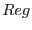

One important issue for the spectral analysis with X-ray detectors is the treatment of background for extended sources. In order to subtract the background properly, one needs the background spectrum with precisely the same detector characteristics as the extracted source spectrum. The backcorr task should not be used on spectra obtained with the weighting procedure (because it corrects for differential vignetting between the source and background areas).
To deal with the particle background (more or less constant outside proton flares), one should assign weights to the reference event list and extract images or spectra using the same spectral or spatial (in detector coordinates) selection as the source. The original spatial selection (on the source) is usually applied to sky coordinates (not detector coordinates). As XMM's pointing is very stable, the conversion from a region in sky coordinates (X,Y) to one in detector coordinates (DETX,DETY) is just a rotation-translation. A scale factor obtained by comparing event rates outside the field of view or at very high energy should generally be applied to the reference images or spectra. The difference should then be particle free. This operation subtracts some astrophysical background as well, but not necessarily the right one for the current field.
In addition to the particle background, the residual astrophysical component (positive or negative) may be subtracted if it can be assumed to be uniform over the field of view (can be checked on the image), and the source does not cover the entire field of view. Selecting an area outside the source for , one may use Sect.3.4 to build the `on-axis' background spectrum, which can be directly subtracted from the source spectrum (accounting for the different region sizes via backscale). Integrating that spectrum within a band (and dividing by the region's area) results in a constant which may be subtracted from images.